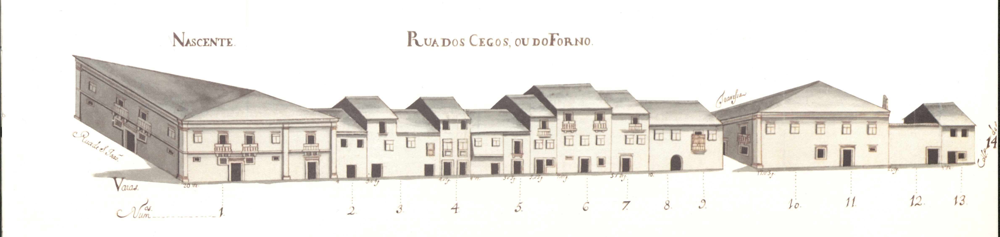

Rua dos Cegos ou do Forno - vista nascente.

Rua dos Cegos ou do Forno - vista poente.
Rua dos Cegos ou do Forno - vista nascente.
Rua dos Cegos ou do Forno - vista poente.
Pequena rua, hoje parcialmente desaparecida, que, segundo o Mappa, ligava as traseiras da igreja do Colégio da Companhia de Jesus às da Sé .
Era conhecida por esta designação já na Idade Média, devido ao Forno da Infantaque se localizava na casa do prazo n.º 12.
Estranhamente esta artéria não figura no Tombo do Cabido(ca. de 1369-1380 ).
É esta uma rua da periferia da Sé , bastante secundária, simples elo de ligação entre ruas. Os seus edifícios, têm 2 e 3 pisos, com poucas varandas e raras gelosias. De notar uma casa grande na esquina da rua de S. João ; outra, duplamente sobradada na junção com a rua das Oucias ; e a janela de canto, de cariz renascentista, do prédio grande, do gaveto feito com a rua Pay Manta .
Das 13 casas do lado Nascente e 11 do lado Poente, são prazos do Cabido11 e 8 respectivamente.
Hoje muito poucas casas se conservam no lado Este desta rua. O lado Oeste está totalmente alterado.
A parte Sul da rua, isto é, a que vai além da rua de Pay Manta , foi fechada ao público, por deliberação camarária de 20-06-1896 .
Actual rua do Forno .
Corresponde ao n.º 11 da Rua de S. João , para onde tem a frontaria e serventia principais e ao n.º 3 e 4 da Rua das Oussias .
O enfiteuta é filho de Alexandre Pereira Marinho, sendo o emprazamento feito no ano de 1724 . A casa foi construída em 1535 , em pertenças da casa n.º 9, da Rua de S. João .
Foi construída em pertenças do n.º 9, da rua de S. João .
A casa n.º 4 confronta, do sul, com casa foreira à Capela de Nossa Senhora da Glória .
Confronta, do norte, com casa foreira à Capela de Nossa Senhora da Glória e, do sul, com casa foreira à Igreja de S. Pedro d'Este .
Confronta, do norte, com casa foreira à Igreja de S. Pedro d'Este .
Foi construída em 1554 ,em pretenças do n.º 8.
A casa n.º 9 confronta, do sul, com a travessa que vai para a Rua de S. João e, foi unida ao n.º 8, no ano de 1674 . O prazo é constituído, ainda, pelo n.º 9 da travessa da Rua de S. João para a do Forno.
Corresponde ao n.º 7 da travessa que vai para a Rua de S. João , para onde tem a frontaria e serventia principais. No ano de 1596 , o n.º 11 foi unido ao n.º 10, constituindo um só prazo.
Pertence ao n.º 5 da travessa da Rua de S. João para a do Forno. A denominação de «Forno do Infante» advém-lhe de ter sido construída no local onde, antes de 1481 , funcionou o antigo forno.
Não aparece desenhada no mapa, por ter sido demolida e incorporada no Colégio de S. Paulo da Companhia de Jesus. Inicialmente foi foreira à obra da Sé . Depois de 1568 , foi trocada por outra casa do referido Colégio.
Correspondem ao n.º 1 da travessa que vai da Rua do Forno para a do Poço, para onde têm a frontaria e serventia principais. No prazo da casa n.º 19 foi incorporado o n.º 15, em 1673 , e os n.º 17 e 18, em 1561 .
A casa é foreira ao chantrado. O censo é pago pelo Dr. Francisco Gomes do Couto.
O enfiteuta sucedeu a Constantino Barreto de Menesese ao Rev. Abade Jerónimo de Araújo. O n.º 20 situa-se na esquina que dá para a travessa que vai para a Rua do Poço e confronta, do sul, com a dita travessa e, do norte, com casa de vínculo. O n.º 21 confronta, do Sul, com a referida casa de vínculo. O n.º 10 da travessa da rua do Forno para a do Poço faz parte do n.º 20.
O enfiteuta sucedeu a Constantino Barreto de Menesese ao Rev. Abade Jerónimo de Araújo. O n.º 20 situa-se na esquina que dá para a travessa que vai para a Rua do Poço e confronta, do sul, com a dita travessa e, do norte, com casa de vínculo. O n.º 21 confronta, do Sul, com a referida casa de vínculo. O n.º 10 da travessa da rua do Forno para a do Poço faz parte do n.º 20.
Pertence ao n.º 4
O emprazamento foi feito em 1710 .
| Número de porta | Enfiteuta |
|---|---|
| 1 | None |
| 2 | Francisco Pereira Marinho |
| 3 | João Pereira do Lago |
| 4 e 23 | Francisco Correia, carpinteiro |
| 5 | Rev. João de Sousa Lima, Mestre Escola |
| 6 | Dr. José Peixoto |
| 7 | Francisco da Costa de Mesquita, cidadão de Braga |
| 8 e 9 | Lie. João Carvalho Ferreira |
| 10 e 11 | None |
| 12 | Carlos Magalhães de Azevedo, Cónego |
| 13 | Padre Luís da Cunha, Congregado |
| 14 | None |
| 15, 17, 18 e 19 | None |
| 16 | None |
| 20 | António Barreto de Meneses |
| 21 | António Barreto de Meneses |
| 22 | Manuel Ribeiro Pereira |
| 23 | None |
| 24 | Teresa da Silveira, viúva de Sebastião do Couto |